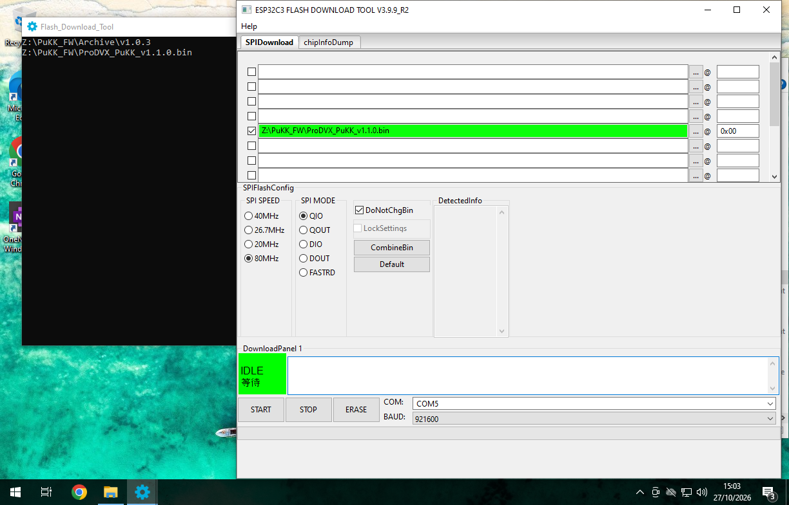

PuKK Migration guide (from v1.0.3 to v1.1.0)
Due to modifications to the firmware, some changes are required to update the PuKK to a new version.
Please note that if there is a BLUE MARK next to the 1.0.3_Burn firmware on the product box, the device is already updated to 1.1.0!
Configuration changes
A few changes were made to the configuration. Most notably:
cms_server_address->http_server_addressdo_ota->enable_otapoll_interval_ms->http_poll_interval_ms
REST API Authorization
From v1.1.0, a bearer token is required for the on-device REST API. This is required for all endpoints.
This token is generated from the Token Generator on the ProMGR Portal with the default device key ProdvxPukk.
Firmware Upgrade
Due to a core modification in the firmware, a manual upgrade is required.
The standard guide uses a Windows PC. Similar methods are possible with other systems. Request more information with ProDVX Support.
Tools required
Update Steps
- Connect the PuKK Workspace to the Windows PC using a USB cable
- Open the Flash Download Tool
- Select the following values
Chip Type:ESP32-C3Work Mode:DevelopLoad Mode:UART
- Under SPI Flash Config set the following values
SPI SPEED:80MHzSPI MODE:QIO
- Verify the COM port is set
- Set
BAUDto921600 - Leave all other values default
- In one of the boxes in the top, press the little box with the 3 dots and select the firmware (.bin) file
- To the right of the selected firmware file enter
0x00so it saysfirmware.bin @ 0x00 - Ensure the firmware file is checked to the left
- Verify if it is similar to the image below (COM port might be different in your case)
- Press START
- The program will change the bottom-left box (DownloadPanel) to
SYNC, thenDOWNLOAD, and finallyFINISH - Once the DownloadPanel says
FINISHand has turned blue, press STOP. - The PuKK Workspace is now updated and can be disconnected.
